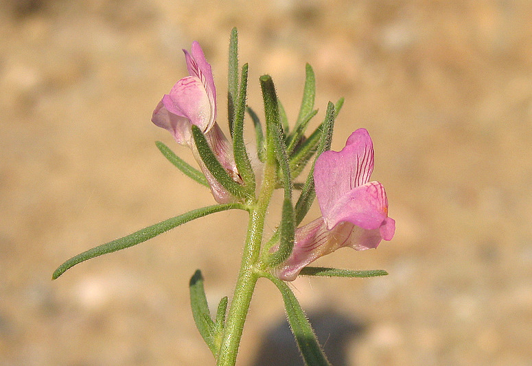
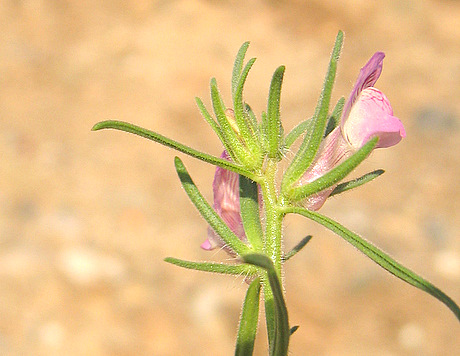
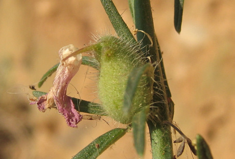
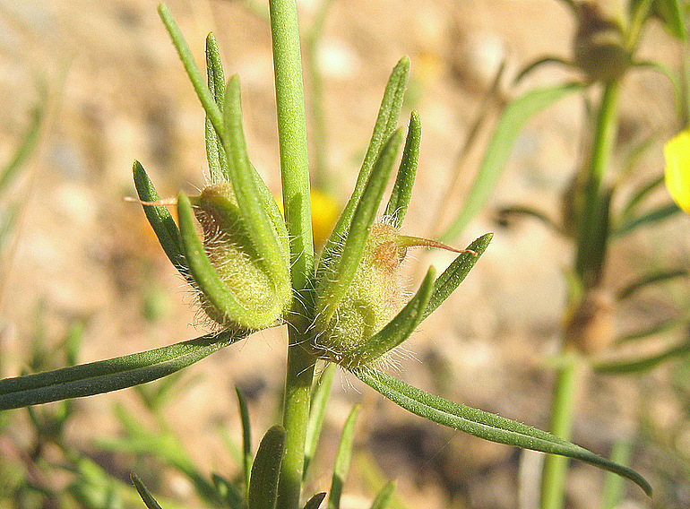
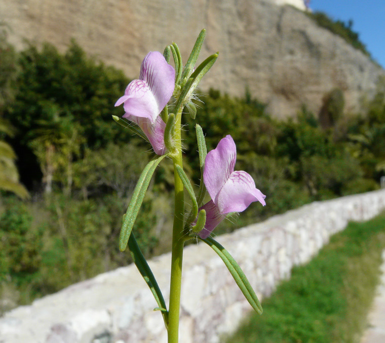

| PHRYGANA | Fauna | Flora |
additions nouveautés |
espèces species |
contact -
info - commentaires phrygana1 (at) gmail.com |
| Particularités crétoises | Galles et mines |
| Misopates orontium (L.) RAF. |
| 59 | Flora | SCROPHULARIACEAE | Misopates RAF. |
 Misopates orontium Agia Galini 15 avril 2007 |
| en: Lesser snapdragon fr: le Muflier des champs nl: Akkerleeuwebek de: Acker-Löwenmaul | |
| Feuilles: courtement pétiolées, étroites, linéaires, opposées à la base de la tige, alternes dans la partie supérieure. | |
| Tige: droite peu ramifiée. | |
| Fleurs: rose clair, rarement blanc rosé, à pédicelle court, groupées au sommet en une inflorescence lâche; calice à longues dents linéaires. | |
| Fruit: une capsule arrondie (8 - 10 mm), poilue et avec des poils glanduleux. | |
| Hauteur: 10 - 60 cm | Type biologique: thérophyte |
| Floraison: février mars avril mai | |
| Altitudes: 0 - 600 m | |
| Statut en Crète: indigène | |
| Biotopes en Crète: olivaies, lieux rocheux, champs cultivés, sables maritimes. | |
| Distribution: Europe | |
| Espèce héliophile | |
|

 Misopates orontium Agia Galini 15 avril 2007 |
 Misopates orontium Agia Galini 15 avril 2007 |
|
 Misopates orontium Agia Galini 26 février 2010 |
| 03 janvier 2012 |
| © paul fontaine -- © Phrygana.eu 2007 -- 2013 |